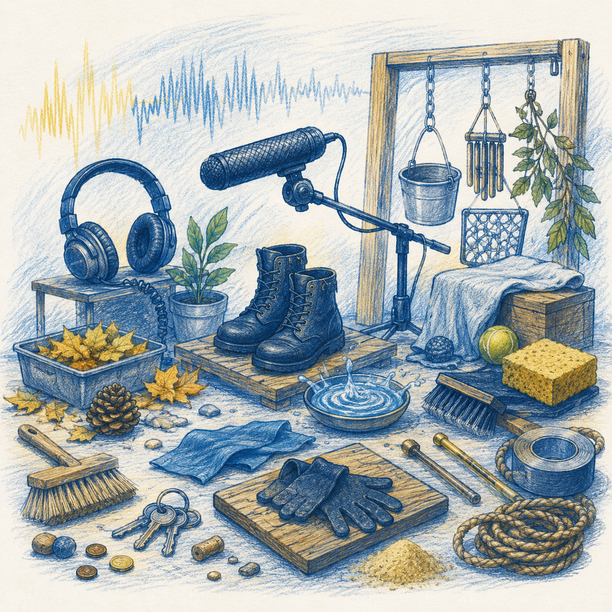

Creative foley recording and sound design to bring visual media to life.

Foley work builds the everyday sounds a scene needs — footsteps, movement, props and texture — recorded and synced to picture. It's paired with wider sound design to give film and video projects a complete sound world.
Foley and sound design to complete a film or video soundtrack.
Original sound effects and design for games and interactive work.
Sound design for promotional and branded video content.
Oxford's student and independent film community can bring picture-locked or in-progress edits to Honk Studios for foley recording and sound design, working from our Park End Street studio in the city centre.
Yes, foley and sound design is recorded and synced to your edit.
Message us on WhatsApp about your edit format and we'll confirm what works.
Yes — general sound design and effects are part of the same service.
Message us on WhatsApp with details of your edit and timeline.
Chat on WhatsApp